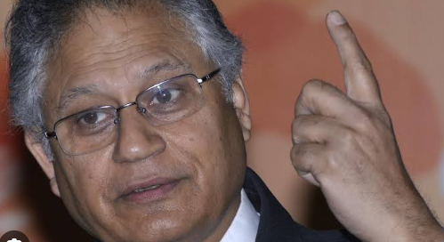
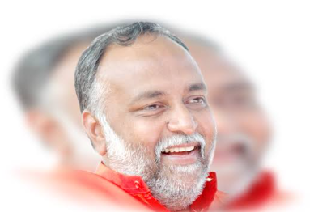
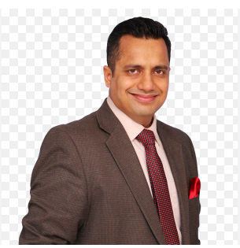

Shiv Khera
Shiv Khera is an Indian author, activist and motivational speaker, best known for his book, You Can Win. He launched a movement against caste-based reservation in India, founded an organization called Country First Foundation Wikipedia
Born: 23 August 1961 (age 62 years), Dhanbad
Education: Shri Ram College of Commerce
Dr Ujjwal
Dr Ujjwal is an international trainer, best selling author and motivational speaker. He is the proud achiever of three Guinness world records. He has been included in the prestigious Top 10 Global Indian Thinkers List of 2014. ... Google Books
Born: 13 November 1973 (age 50 years), Chhattisgarh
Partner: Rimpal Patni

Swami Sukhabodhananda
Swami Sukhabodhananda is a guru from the Bangalore area of India.He was the only spiritual leader representing Hinduism at the 2005 World Economic Forum in Davos, Switzerland. Wikipedia
Swami Sukhabodanandaji is one of the most respected Spiritual Master from India, an erudite motivational speaker, Vedantic scholar, Spiritual scientist nicknamed as Corporate Guru; whose core teaching is to bring about transformation in every individual through clarity and understanding, rather than through blind faith and following. His unique ability to deconstruct the most critical challenges of life, offer holistic solutions and his simple approach to problem solving has transformed the lives of millions across the globe. His life’s goal is to help people realize the potential of their heart, mind and soul.
Born: 25 April 1955 (age 68 years), India
Sandeep Maheshwari
Sandeep Maheshwari is a name among millions who struggled, failed and surged ahead in search of success, happiness and contentment. Just like any middle class guy, he too had a bunch of unclear dreams and a blurred vision of his goals in life. All he had was an undying learning attitude to hold on to.
Sandeep Maheshwari is a name among millions who struggled, failed and surged ahead in search of success, happiness and contentment. Just like any middle class guy, he too had a bunch of unclear dreams and a blurred vision of his goals in life. All he had was an undying learning attitude to hold on to.
Sandeep Maheshwari
https://www.sandeepmaheshwari.com
Born: 28 September 1980 (age 43 years), New Delhi
Spouse: Ruchi Maheshwari
Parents: Roop Kishore Maheshwari, Shakuntala Rani Maheshwari.
Education: Kirori Mal College

Dr. Vivek Bindra
Dr. Vivek Bindra is the CEO and founder of Bada Business Pvt. Ltd. He is a well-known author, motivational speaker, international corporate trainer, and business coach. He holds 11 world records, including 9 Guinness World Records in various categories. ... Google Books
Born: 5 April 1982 (age 41 years), Delhi
Education: Amity University Noida
Organization founded: Bada Business
Jaya Kishori
Jaya Kishori attended Birla Secondary High School until intermediate school. Then she attended Shri Shikshayatan College in Kolkata, where she received her B.Com. Degree
She is popularly known as 'The Meera of modern world' or 'Kishori Ji' among her followers. Jaya begun public speaking at a very early age when she was just 7-years-old. She obtained grand recognition for her 7-day-long psychical Katha 'Srimad Bhagwat Gita' and 3-day-long 'Katha Nani Bai Ro Mayro'.30 Jan 2023